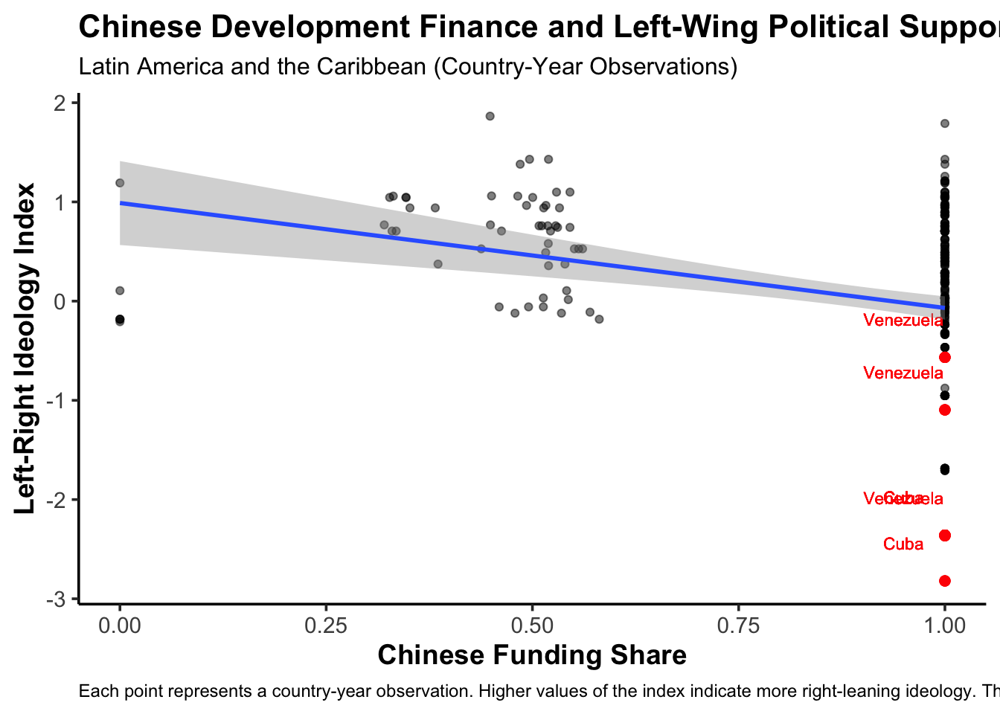
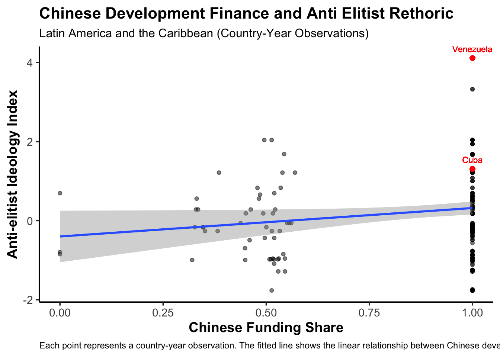

Expanded Research Design
Research Design
The increased Chinese commitment to development and growth in regions such as Africa or Latin America has raised concerns about its economic and political implications. The United States has voiced concerns about a potential threat to American national security: Trump’s rhetoric about Chinese “economic aggression” illustrates this trend clearly (Zeng and Li 2019). With the rise of Chinese development finance, Latin American countries have been choosing to diversify their borrowing strategies, distancing themselves from the United States (Albright 2025). Thus, it is clear that there is a link between Chinese lending and ideology, both in the demand and supply side of sovereign debt. Past scholarship has already established through quantitative analysis that Chinese loans are more likely to land in Latin American countries that align with their “One China Policy” or vote in alignment with China in the UN General Assembly (Dreher and Fuchs 2015).
Past scholarship has focused on understanding supply and demand factors of Chinese development finance. So far, there is a great amount of speculation about what an increased amount of Chinese funding could mean for the geopolitical environment. However, there is little literature that seeks to quantify the causal effect of an increased Chinese dominance in development finance on Latin American domestic politics. Scholars like Albright demonstrated that LACs, such as Ecuador, considered diversifying beyond the hegemony of the US a compelling reason to distance themselves from the US in this market (Albright 2025). Using this past literature on the market for Chinese development finance as a starting point, this research will take it a step further to quantify this phenomenon.
This paper asks whether Chinese development finance is correlated with an increased support for left wing political parties in Latin American countries. With American concerns about the Chinese political and economic threat, and academic theories about an incoming power transition where China takes the place once held by the United States, whether Latin American countries choose to bandwagon with the new power or balance against it by siding with the United States will be a key determinant of what the future world order will look like. An interesting way to track how soft power tools such as sovereign debt are reshaping the international system, is to test if it is true that Chinese development aid is shifting LACs into closer alignment with more leftist agendas.
Hypothesis: Higher levels of Chinese development finance in Latin American countries will increase left wing party support.
This hypothesis is grounded on past political economy literature. Chinese loans are known to be larger, which is attractive for Latin American countries, especially when it comes to funding large infrastructure projects (Albright 2025). Additionally, Chinese fund allocation is, according to the Ministry of Commerce, independent of institutional quality in the recipient country, which does matter in the allocation of funds by Western parties like the World Bank or the IMF. When borrowing from the US, World Bank or IMF, ideological distance from the US matters for capital allocation (Kempf et al. 2023). Past literature on the correlation between ideology and loans from the US quantified how loan volume and size changed as ideological distance changed too. This paper found that when a US bank experienced increased ideological distance from a country after elections, it reduces its lending volume by 22% and number of loans by 10% (Kempf et al. 2023).
Given these mechanisms, it is reasonable to expect that an increase in Chinese development finance will increase left wing party support in Latin America. Because Chinese financing offers access to even larger amounts and fewer political constraints, it can open LACs political spectrum. If LACs find themselves less indebted to the US and the Western financing mechanisms, politicians are freer to openly encourage and implement a broader range of agendas, including left leaning policies that would otherwise not align with the US. Moreover, when less reliant on the US, politicians can feel emboldened to criticize the US hegemony and seek divestment from it through a closer alignment with Chinese values. As a result, increased access to Chinese financing may strengthen the appeal and success of left wing presidential candidates, that advocate for independence from the US agenda.
Datasets
The independent variable for this paper is the share of Chinese funding to American and World Bank funding, which can be otherwise understood as “Western” development finance. I chose to work with this ratio instead of just the amount of Chinese funding because this paper focuses on relative influence from these two spheres on Latin American domestic politics. The ratio measures the balance of power, an increase in this ratio can predict a Latin American country potentially shifting its political alignment. The raw number with the Chinese aid amount is not very telling of how much China is out competing the US in terms of influence, it only shows Chinese presence.
Data on Chinese development finance was retrieved from AidData 3.0, which contains information on worldwide development projects funded by China. This database documents over 20,985 projects across 165 low and middle income countries totaling $1.34 trillion. On the other hand, data on American development finance was retrieved from the US International Development Finance Corporation. The website maintains an active project dataset with more than 100 countries, and an active portfolio worth over$40 billion. Data on Western funding was retrieved from the Development Finance Corporation and the International Bank for Reconstruction and Development. All of these amounts were aggregated at the country-year level from the 2000 to 2021 period, to match what was available for Chinese financing. In addition, the monetary value of commitment was adjusted in all cases to be in 2021 dollars using CPI data from the Federal Reserve.
In order to have a reliable independent variable that took into account Chinese influence and not just Chinese presence, I constructed a new variable that calculated the share of Chinese funding of the total received Western and Chinese funding. For this process, I merged the AidData 3.0 dataset with the datasets from the DFC and the IBRD, logging all quantities and adjusting them to 2021 US dollars to ensure everything was in the same scale. The share I created by dividing the amount of Chinese funding in a given year by the total amount of funding received by a country, which included Western funding.
The dependent variable is the left wing vote share. Data on party policy position and electoral outcomes was retrieved from the V-Party dataset. The V-Party dataset was produced by the V-Dem institute and tracks shifts and trends in political parties since 1970 across the world. It contains expert coded measures of party ideology such as populism, anti-elitism, prioritization of minority rights and more. In addition, the dataset contains information regarding total number of seats in the lower chamber and the vote share the party gained in elections to the lower chamber. The dataset has been narrowed down to the 2000-2021 period and the Latin American countries, in order to match the information for Chinese financing.
For the purpose of this study, I have selected the variables anti-elitism and economic left-right wing scale to track how left wing the analyzed party is. According to the V-Party codebook, a higher number for the anti-elitism variable means that anti-elite rhetoric is more important for the given party. On the other hand, the higher the left-right index, the more right wing the party is. I considered the anti-elitism variable to be a good indicator of party ideology because of previous literature that identifies left wing parties as more prone to make statements against the elite. Knowing from previous research that borrowing decisions from China often contain an ideological component that seeks to diversify from the US imperialist agenda, it also seems reasonable to trust the anti-elitism variable to be an accurate predictor of left-right lean. Moreover, the economic left-right wing variable is the best to objectively measure the political orientation of each party, where parties with a lower number are considered more left leaning.
In order to track the vote share aspect, I have decided to focus on the vote share gained by each party in the elections for the lower chamber. It is reasonable to trust this variable to provide an accurate representation of how voter preference for left leaning parties is changing throughout the years.
The first challenge I found with this data set was that it only contained information for election years in each country. Because I wanted to have more observations, for every year of Chinese funding, I completed the missing years with the values from the previous election year. This made sense, since for the duration of a given party in power, their right/left lean will remain the same. This allowed me to go from only 123 observations across all LACs to 532 observations.
The main challenge with both datasets was that they had a different unit of analysis. While the AidData 3.0 dataset had country-year for each observation, the V-Party dataset had party-country-year for each observation. In order to be able to use both datasets together, I had to modify the unit of analysis in the V-Party dataset so I could have it as a country-year too. To calculate the ideological orientation of each country each election year, I grouped by country and calculated the weighted mean of the left-right ideology score as well as the anti-elitism variable. The decision to calculate a weighted mean was to accurately account for the fact that not all parties within every country are equally relevant. The weighted mean gives a more accurate depiction of the ideological anchor of the countries each given year. Both datasets were merged by country and year.
The graphs below show the initial correlation between Chinese financing and each of the two ideological variables. The first graph shows a negative correlation between the share of Chinese financing received by a country and the left-right index, this means that as the share of Chinese presence increases, LACs shift towards the left. Moreover, the second graph shows a positive correlation between the share of Chinese financing and the anti-elitism index, indicating that when a country has a higher ratio of Chinese to Western funding, the anti elitist rhetoric used by parties tends to increase. These results are consistent with the mechanism proposed in the hypothesis and also, consistent with past literature, such as the interviews conducted to policy officials in Ecuador, where they expressed how Chinese funding was perceived as a lever to gain more independence from American values and constraints (Albright 2025).

Regression
This study will use a two-way fixed effects regression model to compare the impact of Chinese development finance within each Latin American country from 2000 to 2021. Country fixed effects control for time-invariant factors such as geography, historical political orientation, and institutional factors, while the year fixed effects control for trends affecting all countries. The regression will also control for confounding variables that could affect both the likelihood of receiving Chinese financing and an increase in left-wing party support, for example GDP per capita and trade with China.
\[ LeftRightIndex_{it} = \beta_1 \cdot \log(chinese\ funding\ ratio) + \beta_2 \cdot GDP_{it} + \beta_3 \cdot Trade_{it} + \alpha_i + \gamma_t + \epsilon_{it} \]
\[ AntiElitismIndex_{it} = \beta_1 \cdot \log(chinese \ funding\ ratio) + \beta_2 \cdot GDP_{it} + \beta_3 \cdot Trade_{it} + \alpha_i + \gamma_t + \epsilon_{it} \]
The first regression looks at the relationship between Chinese funding and the left-right index. The coefficient is both negative and statistically significant. It shows that a one unit increase in the Chinese funding share, is associated with a 0.14 decrease in the left-right index. Similarly the second regression points out the fact that a one unit increase in Chinese share is associated with a 0.4 increase in anti-elitist rhetoric.
The main threat to causal inference is reverse causality: countries that are already left leaning tend to receive more funding from China, and none from the US. For example, as it is illustrated in the graph in red, two extreme cases like Cuba and Venezuela did not receive any funding from the US but this was because of already pre-existing conditions that confound the relationship between ideology and development finance. In addition, other confounding variables such as GDP and aspects of the macroeconomic structure of LACs confound the relationship: China would be investing in these countries because of the attractiveness of these factors and at the same time, these factors can impact ideology.
A good way to get around this problem is to run a placebo test. In this case, I have chosen to use the unemployment rate as my variable for the placebo test. If the relationship between Chinese financing and LACs were driven by economic conditions, it would be reasonable to expect a change in the unemployment rate as the share of Chinese funding increases. In a similar regression with country and year fixed effects, I aimed to find the relationship between Chinese funding and unemployment rates. The regression model does not give robust evidence to claim that Chinese funding is significantly driven by by general macroeconomic changes.
This project examines the geopolitical effects of Chinese development finance.1
References
Albright, Zara C. 2025. “The Political and Pragmatic Determinants of Chinese Development Finance in Latin America.” Latin American Politics and Society.
Dreher, Axel, and Andreas Fuchs. 2015. “Rogue Aid? An Empirical Analysis of China’s Aid Allocation.” Canadian Journal of Economics 48 (3): 988–1023.
Kempf, Elisabeth, Mancy Luo, Larissa Schäfer, and Margarita Tsoutsoura. 2023. “Political Ideology and International Capital Allocation.” Journal of Financial Economics 148: 150–73.
Zeng, Ka, and Xiaojun Li. 2019. “Geopolitics, Nationalism, and Foreign Direct Investment.” The Chinese Journal of International Politics 12 (4): 495–518.
Footnotes
This project benefited from AI-assisted tools for minor technical support, including formatting bibliographic entries and assisting with data reshaping tasks. All substantive analysis and interpretation were conducted by the author.↩︎